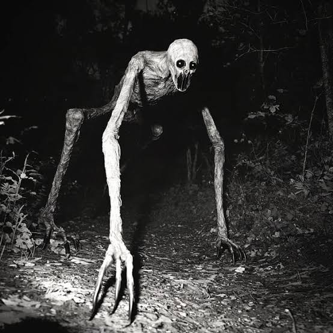

You decide to get out of your truck, the air is crisp and cold
enough to see your breath, you get goosebumps from the chill and as
you start to make your way to the end
of your trailer a sudden
fog starts to appear, almost as if on cue. You make it halfway to
the end of the trailer when you feel your stomach drop and your
hair stand on end.
Your flashlight is shaking as you notice
the tall figure standing at the trailers edge, you know something
isn’t right.
A hand grasping the corner with long ghostly pale fingers, slender
and almost spider like with long nails twisted and bent outstretched
like claws scratching into the metal.
Two eyes glowing at you
and a mouth agape revealing rows upon rows of sharp ragged teeth
dripping with blood from what must have been its last victim.

You start to step backward to make your way back to the cab of your
truck when you hear what sounds like bones snapping as the creature
becomes twisted,
stretched and distorted crawling toward you.
You turn around as quickly as you can and start running, not daring
to look behind you. Your so scared you almost
fall when you try
to climb in, your heart is racing as you get inside and lock the
doors. You’re whole body is shaking and you’re out of breath, you
can feel your
heart beating through your shirt as you check
your side mirror to see if the creature is still there. It isn’t.
You decide to get out of there as quickly as possible but
as
you turn yourself around you see it……….in the passenger seat.